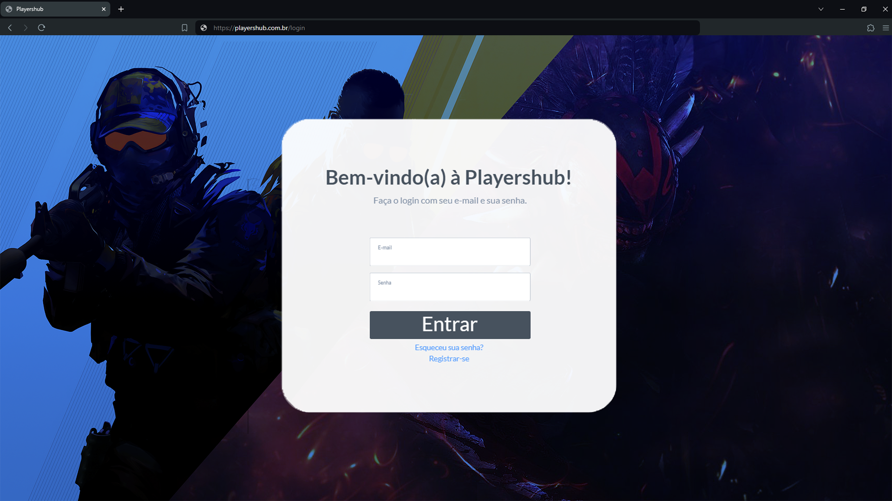

Introdução
Playershub foi desenvolvido para criar um ambiente mais limpo, amigável e justo para os nossos jogadores.
Informações Gerais
- Projeto: Playershub
- Repositório GitHub: Link
- Membros da equipe:
Contexto
Detalhes sobre o espaço de problema, justificativas e os objetivos do projeto.
Problema
Com o avanço da tecnologia, as formas de entretenimento foram evoluindo, e hoje em dia, temos os famosos jogos virtuais, que são acessíveis na palma da sua mão ou em um computador desktop. No entanto, mesmo com essa conveniência, ainda há um problema em questão. A dificuldade de encontrar parceiros de jogos, a prevalência de experiências negativas nas comunidades e a falta de uma plataforma amigável para conectar jogadores interessados nos mesmos jogos.
Objetivos
Nosso objetivo é ser uma plataforma que visa facilitar a conexão entre os jogadores de uma maneira rápida, promover uma comunidade positiva e saudável, melhorar a experiência de jogo de todos os usuários e promover a diversidade e inclusão, fornecendo um ambiente acolhedor e seguro para que os jogadores possam se encontrar.
Justificativa
A comunidade de jogos tem enfrentado desafios como a falta de plataformas para unir os jogadores, o surgimento de comportamentos tóxicos e a exclusão de grupos, seja por sexo ou até mesmo nível de habilidade. A Playershub surge como uma resposta a esses desafios, fornecendo uma solução para conectar os jogadores, promover uma comunidade saudável e inclusiva e, por consequência, melhorar a experiência de jogo de todos os usuários.
Público-alvo
Jovens com mais de 18 anos, que tenham qualquer nível de habilidade, seja iniciante, intermediário ou um pro-player, todos terão um espaço reservado na Playershub, para que possam se conectar e ter ótimas experiências!
Concepção (Design Thinking)
Detalhes do processo de discovery do projeto.
Processo de Design Thinking
O arquivo que se segue apresenta o resultado desse processo.
Especificações do Projeto
Documentação das especificações do projeto.
Histórias de Usuários
Com base na análise das personas foram identificadas as seguintes histórias de usuários:
EU COMO...PERSONA |
QUERO/PRECISO...FUNCIONALIDADE |
PARA...MOTIVO/VALOR |
|---|---|---|
| Usuário do sistema | Denunciar outro usuário | Ajudar a manter a comunidade saudável |
| Administrador | Aplicar punições | Para manter a comunidade justa |
| Usuário do sistema | Procurar jogadores do meu nível | Me proporcionar novos desafios |
| Usuário do sistema | Procurar jogadores sociáveis | Pois eu só quero ter uma partida divertida |
Requisitos
As tabelas que se seguem apresentam os requisitos funcionais e não funcionais que detalham o escopo do projeto.
Com base nas Histórias de Usuário, enumere os requisitos da sua solução. Classifique esses requisitos em dois grupos:
- Requisitos Funcionais (RF): correspondem a uma funcionalidade que deve estar presente na plataforma (ex: cadastro de usuário).
- Requisitos Não Funcionais (RNF): correspondem a uma característica técnica, seja de usabilidade, desempenho, confiabilidade, segurança ou outro (ex: suporte a dispositivos iOS e Android).
Lembre-se que cada requisito deve corresponder à uma e somente uma característica alvo da sua solução. Além disso, certifique-se de que todos os aspectos capturados nas Histórias de Usuário foram cobertos.
Requisitos Funcionais
| ID | Descrição do Requisito | Prioridade |
|---|---|---|
| RF-001 | Permitir que o usuário se registre no aplicativo. | ALTA |
| RF-002 | Permitir que o usuário conecte a conta dos seus jogos no aplicativo. | ALTA |
| RF-003 | Facilitar a criação de salas no aplicativo para que seja criada uma sala no jogo desejado ao mesmo tempo. | ALTA |
| RF-004 | Permitir que o usuário adquira uma assinatura exclusiva para benefícios. | MEDIA |
| RF-005 | Sistema de amizades no aplicativo. | MEDIA |
| RF-006 | Crossplay | MEDIA |
| RF-007 | Forum para Discussao dos Jogadores | MEDIA |
| RF-008 | Espaco de Video-aulas feito por Pro-players | MEDIA |
Requisitos Não-Funcionais
| ID | Descrição do Requisito | Prioridade |
|---|---|---|
| RNF-001 | O sistema deve ser responsivo para rodar em um dispositivos móvel | ALTA |
| RNF-002 | Deve processar requisições do usuário em no máximo 3s | BAIXA |
| RNF-003 | O aplicativo deve ser projetado para suportar um grande número de usuários | ALTA |
| RNF-004 | O aplicativo deve ser extremamente seguro contra qualquer tipo de ataque | ALTA |
Projeto de Interface
Artefatos relacionados com a interface e a interacão do usuário na proposta de solução.
User/Screen Flow e Protótipo interativo
Artefatos relacionados com a interface e a interacão do usuário na solução proposta.
Userflow:
Protótipo interativo:
Wireframes
Protótipo de telas do sistema em baixa fidelidade (rascunhos).
Wireframe:

Metodologia
Detalhes sobre a organização do grupo e o ferramental empregado.
Ferramentas
Relação de ferramentas empregadas pelo grupo durante o projeto.
Liste as ferramentas empregadas no desenvolvimento do projeto, justificando a escolha delas, sempre que possível. Inclua itens como: (1) Editor de código, ferramentas de comunicação, ferramentas de diagramação, plataformas de hospedagem, entre outras.
| Ambiente | Plataforma | Link de Acesso |
|---|---|---|
| Processo de Design Thinking | Miro | Miro |
| Repositório de código | GitHub | Github |
| Protótipo Interativo | MarvelApp | MarvelApp |
Gestão do Projeto
Divisão de papéis no grupo e apresentação da estrutura da ferramenta de controle de tarefas (Kanban).
...... COLOQUE AQUI O SEU TEXTO ......
Controle de Versão
Estrutura do fluxo de trabalho no ambiente do GitHub.
Durante o desenvolvimento do projeto, foram efetuados commits regulares para registrar as alterações feitas nos arquivos do repositório.

Solução
Esta seção apresenta todos os detalhes da solução criada no projeto.
Apresente cada uma das funcionalidades que a aplicação fornece tanto para os usuários quanto aos administradores da solução.
Inclua, para cada funcionalidade, itens como: (1) titulos e descrição da funcionalidade; (2) Estrutura de dados associada; (3) o detalhe sobre as instruções de acesso e uso.
Video do Projeto
O vídeo a seguir traz uma apresentação do problema que a equipe está tratando e a proposta de solução.
O video de apresentação é voltado para que o público externo possa conhecer a solução. O formato é livre, sendo importante que seja apresentado o problema e a solução numa linguagem descomplicada e direta.
Utilize o recurso de compartilhamento via embed e inclua o vídeo logo abaixo.
...... COLOQUE AQUI O SEU VIDEO ......
Funcionalidades
Esta seção apresenta as funcionalidades da solução.
Apresente cada uma das funcionalidades que a aplicação fornece tanto para os usuários quanto aos administradores da solução.
Inclua, para cada funcionalidade, itens como: (1) titulos e descrição da funcionalidade; (2) Estrutura de dados associada; (3) o detalhe sobre as instruções de acesso e uso.
Funcionalidade 1 - Cadastro de ContatosEXEMPLO
Permite a inclusão, leitura, alteração e exclusão de contatos para o sistema
- Estrutura de dados: Contatos
- Instruções de acesso:
- Abra o site e efetue o login
- Acesse o menu principal e escolha a opção Cadastros
- Em seguida, escolha a opção Contatos

Estruturas de Dados
Descrição das estruturas de dados utilizadas na solução com exemplos no formato JSON.
Apresente as estruturas de dados utilizadas na solução tanto para dados utilizados na essência da aplicação quanto outras estruturas que foram criadas para algum tipo de configuração
Nomeie a estrutura, coloque uma descrição sucinta e apresente um exemplo em formato JSON.
Estrutura de Dados - ContatosEXEMPLO
Contatos da aplicação
{
"id": 1,
"nome": "Leanne Graham",
"cidade": "Belo Horizonte",
"categoria": "amigos",
"email": "Sincere@april.biz",
"telefone": "1-770-736-8031",
"website": "hildegard.org"
}
Estrutura de Dados - UsuáriosEXEMPLO
Registro dos usuários do sistema utilizados para login e para o perfil do sistema
{
id: "eed55b91-45be-4f2c-81bc-7686135503f9"
email: "admin@abc.com"
id: "eed55b91-45be-4f2c-81bc-7686135503f9"
login: "admin"
nome: "Administrador do Sistema"
senha: "123"
}
Módulos e APIs
Esta seção apresenta os módulos e APIs utilizados na solução.
Apresente os módulos e APIs utilizados no desenvolvimento da solução. Inclua itens como: (1) Frameworks, bibliotecas, módulos, etc. utilizados no desenvolvimento da solução; (2) APIs utilizadas para acesso a dados, serviços, etc.
Images:
- Unsplash - https://unsplash.com/EXEMPLO
Fonts:
- Icons Font Face - https://fontawesome.com/EXEMPLO
Scripts:
- jQuery - http://www.jquery.com/EXEMPLO
- Bootstrap 4 - http://getbootstrap.com/EXEMPLO
FAQ
Perguntas e respostas comuns associadas ao projeto.
Apresente uma lista de perguntas e respostas comuns associadas ao projeto. Inclua perguntas como: (1) detalhes de acesso e uso do projeto; (2) informações sobre a instalação e configuração da aplicação; (3) questões sobre a manutenção da aplicação; (4) detalhes sobre a integração da aplicação com outros sistemas; (5) questões sobre a segurança da aplicação.
Referências Bibliográficas
Esta seção apresenta as referências bibliográficas utilizadas no projeto.
Apresente as referências bibliográficas utilizadas no projeto. Inclua itens como: (1) livros, artigos, tutoriais, etc. utilizados no desenvolvimento da solução; (2) links para sites, blogs, etc. utilizados no desenvolvimento da solução.
...... COLOQUE AQUI O SEU TEXTO ......